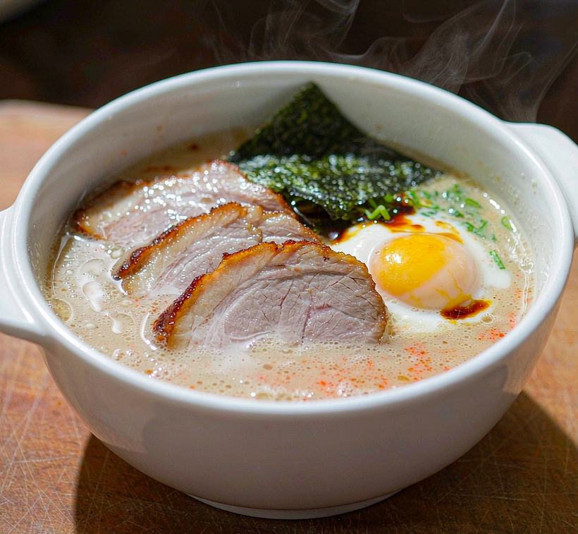
No.1麵屋一番
4.0
★★★★☆
Solo DiningTake It SlowExotic FlavorsQuietCozyPhotogenic
Taste stands out (4.2/5, 9 mentions)
“汤头够浓”
21 reviews · 95% credible
1 flagged · Details →
One line is enough — who you're with, what you feel like, how much you'd spend. English, 中文 or 廣東話. We read every review and every shop photo, then rank all 50 spots against your words.

No.1Taste stands out (4.2/5, 9 mentions)
“汤头够浓”
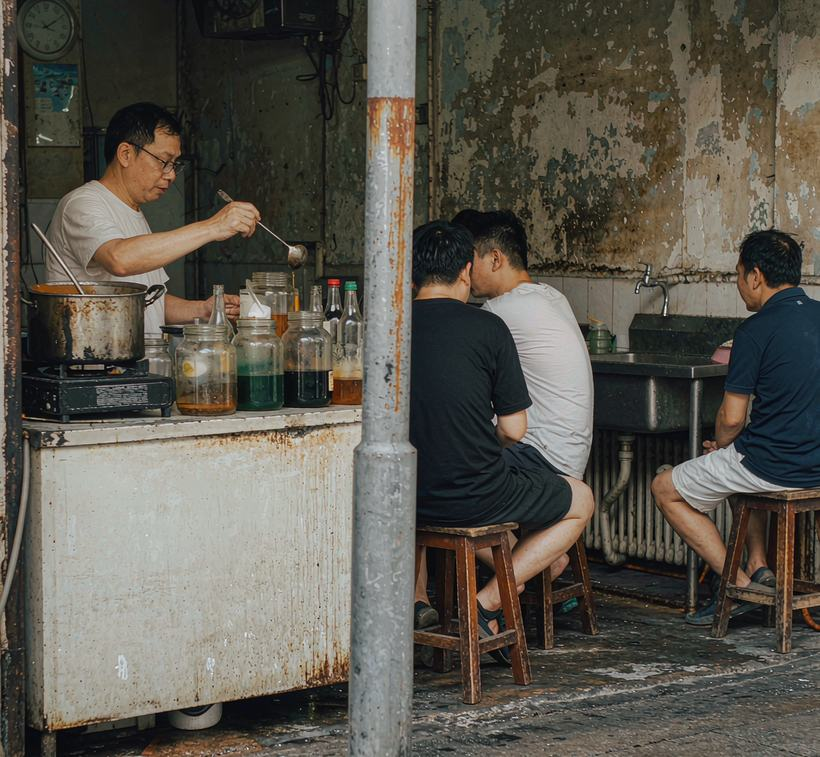
No.2Taste stands out (4.5/5, 4 mentions)(only 6 reviews — score unstable)
“冰量可以叫少冰，好貼心”
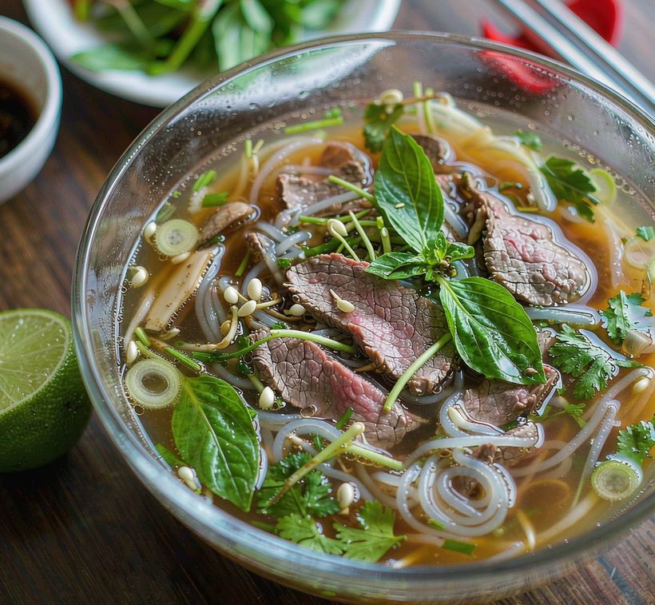
No.3Ambience stands out (4.7/5, 3 mentions)
“影相好靚”
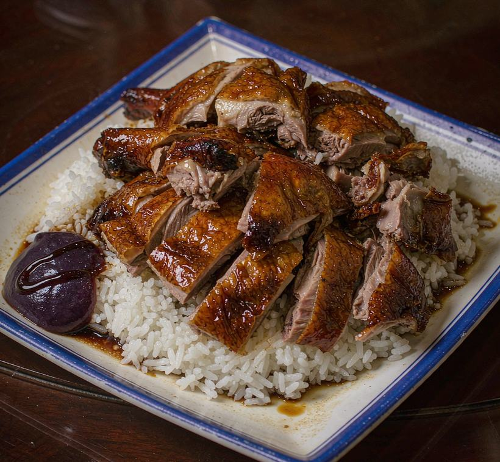
Taste stands out (4.1/5, 11 mentions)
“老店就是老店”
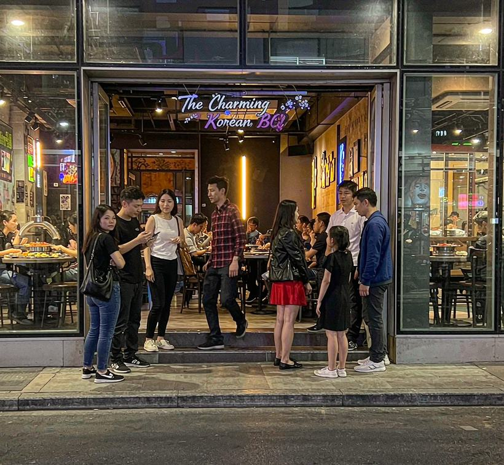
Ambience stands out (4.2/5, 13 mentions)
“冷氣唔夠，食到出汗”
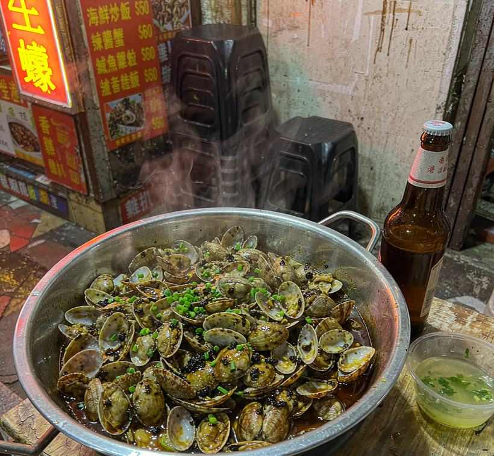
Environment stands out (4.5/5, 2 mentions)
“逼係逼，但好有地道感覺”
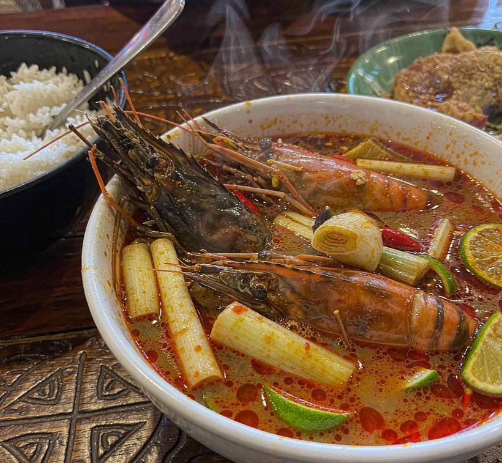
Taste stands out (4.4/5, 10 mentions)
“deep, clean broth”
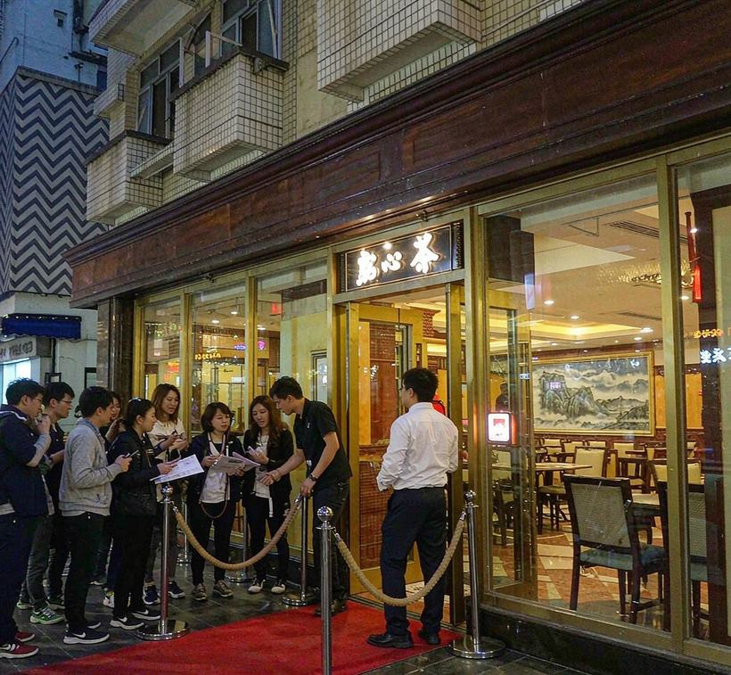
Taste stands out (4.2/5, 36 mentions)
“皮够薄，不会一夹就散”
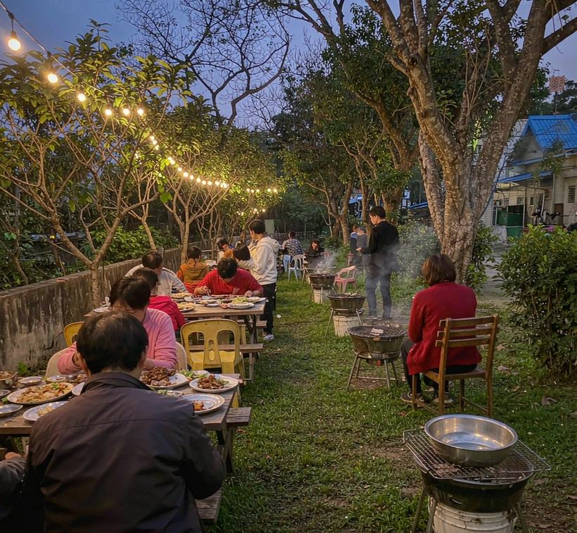
Ambience stands out (4.5/5, 2 mentions)
“quiet enough to actually talk”
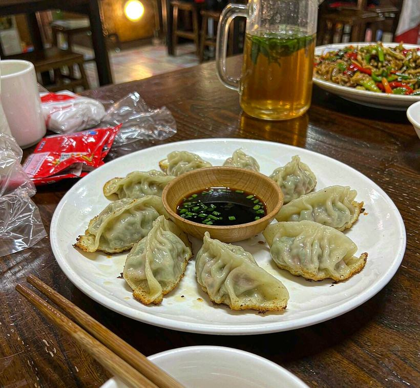
Environment stands out (4.3/5, 4 mentions)
“不算闷，坐下挺舒服”
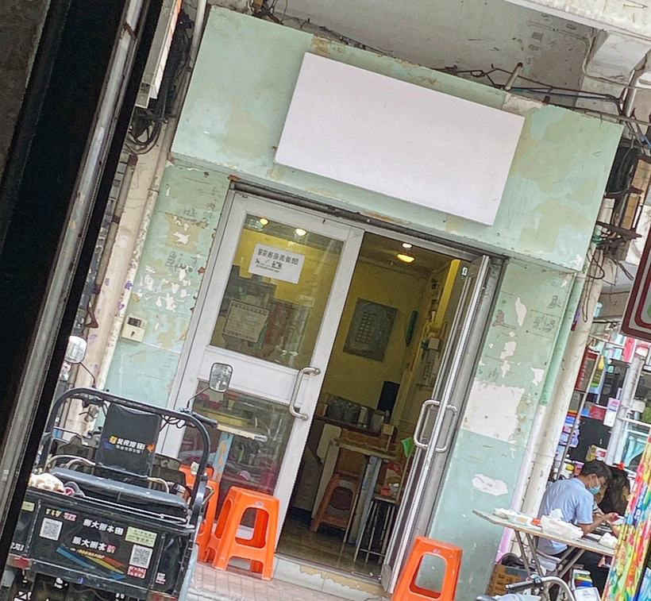
Taste stands out (4.3/5, 18 mentions)
“面身弹牙，不坨”
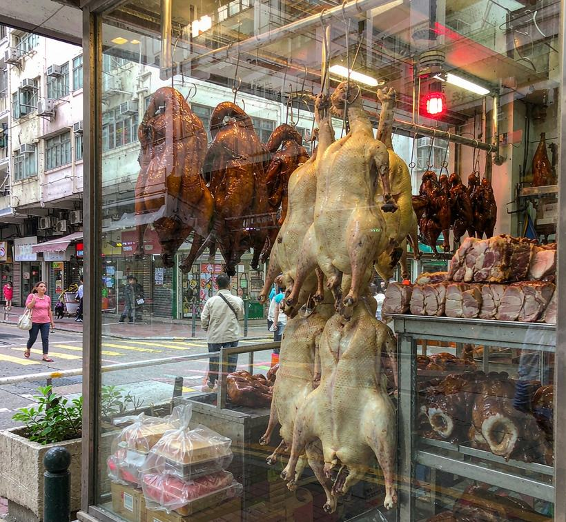
Taste stands out (4.2/5, 28 mentions)
“crisp skin, juicy meat”
dashed tags are read off the shop photo (mood, vibe, photogenic) and only
re-rank, never filter.